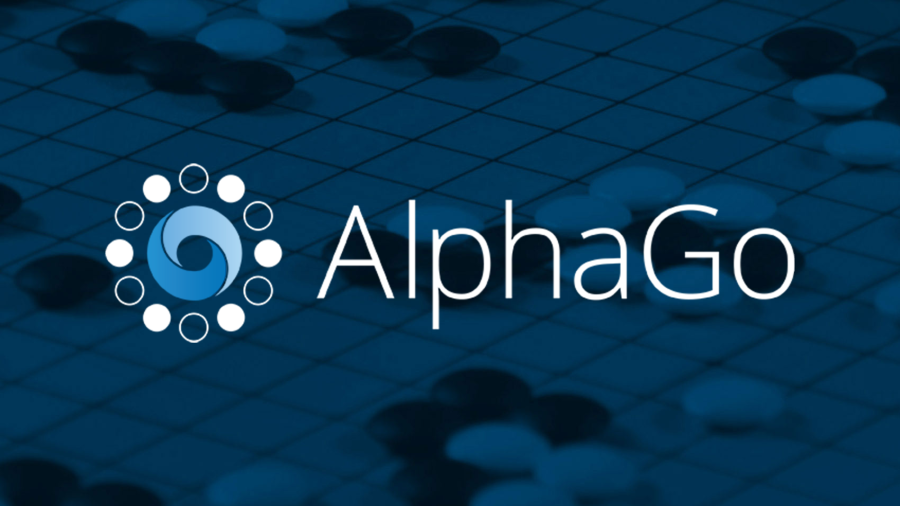
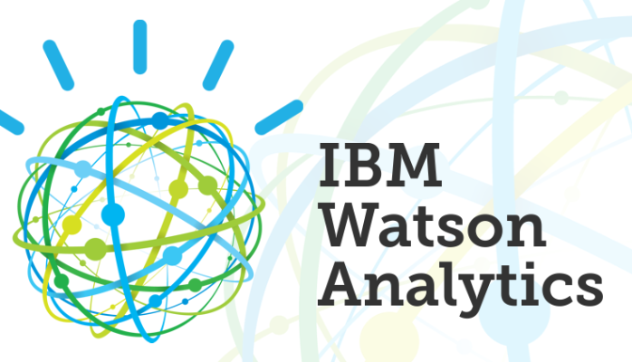

ChatGPT (OpenAI)
Função: Assistente de conversação com modelos de linguagem avançados.
Uso: Responde perguntas, ajuda na criação de textos, programação, tradução de idiomas, etc.
Exemplo: Versões de modelos GPT (como o GPT-4) estão por trás de ferramentas como o ChatGPT, que podem conversar de maneira muito próxima à human
Siri (Apple)
Função: Assistente pessoal baseado em voz.
Uso: Facilita interações com dispositivos iOS, responde a perguntas, define lembretes, envia mensagens e controla dispositivos inteligentes.
Exemplo: A Siri usa IA para entender comandos de voz e realizar tarefas automatizadas em dispositivos da Apple.

DALL·E (OpenAI)
Função: Geração de imagens a partir de texto.
Uso: Cria imagens originais baseadas em descrições de texto fornecidas pelo usuário
Exemplo: O DALL·E gera uma imagem que corresponde a descrição escrita pela usuário de maneira criativa e visualmente interessante.

AlphaGo (DeepMind)
Função: IA especializada em jogos de tabuleiro
Uso: Competiu e venceu campeões mundiais no jogo de Go, que é altamente complexo
Exemplo: AlphaGo foi a primeira IA a derrotar um campeão mundial humano, um feito que mostrou o potencial da IA para resolver problemas.

Watson (IBM)
Função: Plataforma de inteligência artificial para análise de dados.
Uso: Ajuda empresas a interpretar grandes volumes de dados e a tomar decisões informadas.
Exemplo: Watson foi usado para analisar dados genômicos para ajudar na personalização de tratamentos contra o câncer.
BERT (Google)
Função: Modelo de linguagem para compreensão de texto.
Uso: Melhora a busca no Google, permitindo uma melhor compreensão do contexto e das intenções por trás das consultas dos usuários.
Exemplo: Utilizado no Google Search para interpretar perguntas mais complexas e melhorar a precisão das respostas em várias línguas.
OpenCV
Função: Biblioteca de visão computacional.
Uso: Fornece ferramentas e algoritmos para realizar processamento de imagens e vídeos, como detecção de rostos, objetos e reconhecimento de padrões.
Exemplo: Usado em sistemas de segurança e em aplicações de realidade aumentada.
DataRobot
Função: Plataforma de aprendizado de máquina automatizado.
Uso: Automatiza o processo de construção e implantação de modelos de IA, permitindo que empresas realizem análise preditiva de forma mais eficiente.
Exemplo: Usado por empresas para automatizar tarefas como previsão de demanda de produtos, otimização de preços e análise de risco.